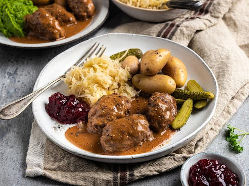

Norvegian Meatballs or Kjøttkaker

Although similar to other meatballs found across the world, the literal translation of kjøttkaker is "meat cakes", as the Norwegian version has bigger and less round patties than other meatball recipes.It's one of our most popular traditional dishes and an everyday comfort food.
Norwegians always say that the best meat cakes are the ones that mom makes.
So what makes a kjøttkake? In Norway, they are traditionally made from minced cattle, pork, lamb, or game meat, and shaped into thick, flat patties and fried.
The dish is served with delicious brun saus (brown gravy).
ingridiets
Meatballs
- 400 g minced beef
- 1 tsp. salt
- 0.25 tsp. pepper
- 0.25 tsp. ground nutmeg
- 0.25 tsp. ground ginger
- 2 tbsp. potato flour
- 1.5 dl water or milk
Gravy
- 4 tbsp. butter
- 4 tbsp. flour
- 1 l beef stock or bouillon
- 0.5 tsp. salt
- 0.5 tsp. pepper
Method
- Make the mince first. Put all the ingredients into a food processor bowl and mix for approx. 10-20 seconds until the mince is evenly and finely ground.
- Shape the mince into big, oval-shaped patties (somewhere between burger patties and meatballs) using a spoon, your hands, and cold water.
- Add some butter to a frying pan on medium-high heat. Fry the patties for approx. 2 minutes per side until they have a nice brown colour.
- Make the brown gravy by melting the butter in a large saucepan. Add flour and brown the mixture at low heat, until it has a nut-brown colour.
- Gradually add hot stock, a little at a time, stirring well between each time you add some liquid. Leave to simmer for approx, 10 minutes. Add salt and pepper to taste.
- Add the meat patties to the gravy and leave them to simmer for approx. 10 minutes (until thoroughly cooked).
Source:Visitnorway.com